Key Metrics
The Problem
Retail data arrives from disconnected sources — in-store POS systems, e-commerce events, and an inventory database — each with its own format and cadence. Batch-only pipelines leave stock, sales, and demand signals stale by the time analysts and downstream services see them.
The goal was one streaming path: capture changes at the source, process them with stream engines, land them in a lake table, and serve demand forecasts behind an API. This build covers the first half of that path on synthetic data; the CDC branch and the forecast serving are still being connected.
Architecture

Approach & Implementation
- Ingest: A POS simulator (3 stores, 5 products) publishes JSON transactions to the
retail_transactionsKafka topic withacks=all, keyed by transaction ID. An e-commerce events module and a REST API module also exist. - Stream processing: Spark 3.4 Structured Streaming computes 5-minute windowed metrics with a 10-minute watermark; a PyFlink job (Flink 1.17) runs keyed fraud and journey functions with Kafka and JDBC sinks. There are no dbt models in the project.
- Storage: Product metrics and customer journeys are written in Delta format (append mode) to local paths. The Spark session does not yet configure Delta or MinIO/S3, so Delta-on-MinIO is not wired. PostgreSQL 15 holds the raw schema; Redis 7 is used as an API cache.
- CDC: A Debezium 2.3 Postgres connector config (pgoutput, five
raw.*tables, topics renamed to table names) is mounted into the Connect container, but it is not registered, Postgres is not set to logical WAL, and no job consumes the CDC topics yet. - Serving & ML: FastAPI exposes SQL-backed analytics routes. A forecasting module (ARIMA, linear/RF/GBM, optional LSTM, mean ensemble) has only been trained on a generated series, and the forecast, segmentation, and recommendation endpoints currently return mock output.
- Observability: A Prometheus metrics collector and scrape config, plus one Grafana dashboard JSON with nine panels (HTTP, system, transaction, revenue, model metrics).
- 15 compose services: zookeeper, kafka, postgres, redis, spark-master, spark-worker, flink-jobmanager, flink-taskmanager, api, prometheus, grafana, Debezium, nginx, minio, jupyter.
Challenges & Solutions
Challenge: Heterogeneous sources
POS, e-commerce events, and inventory tables each change in different ways, making a single batch pull unreliable for fresh analytics.
Solution: Kafka + Debezium CDC ingest
Used Kafka as the shared backbone: the POS feed publishes to its own topic today, and a Debezium 2.3 Postgres connector config is written for the inventory and order tables. Registering it and adding a consumer is the next step.
Challenge: Dual-engine orchestration
Running Spark and Flink side by side with 15 containers raises coordination and monitoring overhead.
Solution: One Compose file with shared monitoring config
Defined all 15 services in one Docker Compose file on a shared network, with a Prometheus scrape config covering the API, Kafka, Spark, Flink, and Debezium, and a Grafana dashboard definition for the API and business metrics.
Outcome
The working path is a simulated POS feed into Kafka, aggregated by Spark into windowed metrics and written as Delta, with a parallel Flink job and a FastAPI layer over PostgreSQL. All data is synthetic, and there are no saved run logs, tests, or forecast accuracy figures.
The Debezium CDC branch is configured but not yet part of the running flow, and the ML endpoints return mock output until a trained model is loaded. Local project — no public GitHub link.